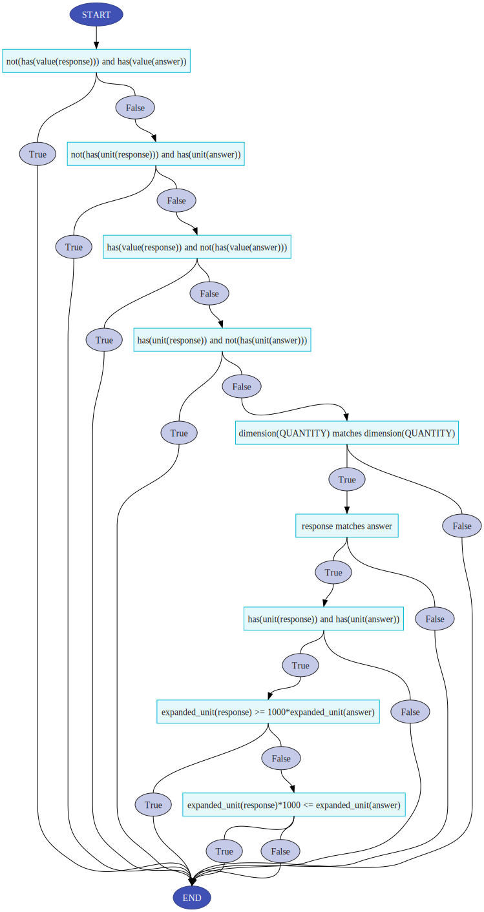

CompareExpressions¶
Supported Response Area Types
This evaluation function is supported by the following Response Area components:
TEXTEXPRESSIONNUMERIC_UNITSCODEESSAY
This function utilises the SymPy to provide a maths-aware comparsion of a student's response to the correct answer. This means that mathematically equivalent inputs will be marked as correct. Note that pi is a reserved constant and cannot be used as a symbol name.
Note that this function is designed to handle comparisons of mathematical expressions but has some limited ability to handle comparison of equalities as well. More precisely, if the answer is of the form \(f(x_1,\ldots,x_n) = g(x_1,\ldots,x_n)\) and the response is of the form \(\tilde{f}(x_1,\ldots,x_n) = \tilde{g}(x_1,\ldots,x_n)\) then the function checks if \(f(x_1,\ldots,x_n) - g(x_1,\ldots,x_n)\) is a multiple of \(\tilde{f}(x_1,\ldots,x_n) / \tilde{g}(x_1,\ldots,x_n)\).
Inputs¶
Optional parameters¶
There are nine optional parameters that can be set: complexNumbers, convention, criteria, multiple_answers_criteria, elementary_functions, feedback_for_incorrect_response, physical_quantity, plus_minus/minus_plus specialFunctions, strict_syntax, symbol_assumptions.
complexNumbers¶
If you want to use I for the imaginary constant, set the grading parameter complexNumbers to True.
convention¶
Changes the implicit multiplication convention. If unset it will default to equal_precedence.
If set to implicit_higher_precedence then implicit multiplication will have higher precedence than explicit multiplication, i.e. 1/ab will be equal to 1/(ab) and 1/a*b will be equal to (1/a)*b.
If set to equal_precedence then implicit multiplication will have the same precedence than explicit multiplication, i.e. both 1/ab and 1/a*b will be equal to (1/a)*b.
criteria¶
The criteria parameter can be used to customize the comparison performed by the evaluation function. If unset the evaluation function will will default to checking if the answer and response are symbolically equal.
The criteria parameter takes a string that defines a set of (comma separated) mathematical statements. If all statements in the list are true the response is considered correct.
The criteria parameter reserves response and answer as keywords that will be replaced y the response and answer respectively when the criteria is checked. Setting criteria to answer=response is gives the same behaviour as leaving criteria unset.
Note: Currently the criteria parameter is ignored if physical_quantity is set to true.
Note: The criteria parameters functionality is currently under development and will rarely produce appropriate feedback and can be quite difficult to debug.
elementary_functions¶
When using implicit multiplication function names with multiple characters are sometimes split and not interpreted properly. Setting elementary_functions to true will reserve the function names listed below and prevent them from being split. If a name is said to have one or more alternatives this means that it will accept the alternative names but the reserved name is what will be shown in the preview.
sin, sinc, csc (alternative cosec), cos, sec, tan, cot (alternative cotan), asin (alternative arcsin), acsc (alternatives arccsc, arccosec), acos (alternative arccos), asec (alternative arcsec), atan (alternative arctan), acot (alternatives arccot, arccotan), atan2 (alternative arctan2), sinh, cosh, tanh, csch (alternative cosech), sech, asinh (alternative arcsinh), acosh (alternative arccosh), atanh (alternative arctanh), acsch (alternatives arccsch, arcosech), asech (alternative arcsech), exp (alternative Exp), E (equivalent to exp(1), alternative e), log, sqrt, sign, Abs (alternative abs), Max (alternative max), Min (alternative min), arg, ceiling (alternative ceil), floor
feedback_for_incorrect_response¶
All feedback for all incorrect responses will be replaced with the string that this parameter is set to.
multiple_answers_criteria¶
The \(\pm\) and \(\mp\) symbols can be represented in the answer or response by plus_minus and minus_plus respectively.
Answers or responses that contain \(\pm\) or \(\mp\) has two possible interpretations which requires further criteria for equality. The grading parameter multiple_answers_criteria controls this. The default setting, all, is that each answer must have a corresponding answer and vice versa. The setting all_responses check that all responses are valid answers and the setting all_answers checks that all answers are found among the responses.
physical_quantity¶
If unset, physical_quantity will default to false.
If physical_quantity is set to true the answer and response will interpreted as a physical quantity using units and conventions decided by the strictness and units_string parameters.
Remark: Setting physical_quantity to true will also mean that comparisons will be done numerically. If neither the atol nor rtol parameters are set, the evaluation function will choose a relative error based on the number of sigificant digits given in the answer.
When physical_quantity the evaluation function will generate feedback based on the flowchart below. Hovering over a criterion node will show a short natural language description of the criterion. Hovering over a result node will show the feedback produced so far.
Remark: In some browser it is necessary to right-click and open the image in a separate tab in order for the tooltips to show up on hover.

strictness¶
Constrols the conventions used when parsing physical quantities.
Remark: If physical_quantity is set to false, this parameter will be ignored.
There are three possible values: strict, natural and legacy. If strict is chosen then quantities will be parsed according to the conventions described in 5.1, 5.2, 5.3.2, 5.3.3 in https://www.bipm.org/documents/20126/41483022/si_brochure_8.pdf and 5.2, 5.3, 5.4.2 and 5.4.3 in https://www.bipm.org/documents/20126/41483022/SI-Brochure-9-EN.pdf. If natural is chosen then less restrictive conventions are used.
Remark: The default setting is natural.
Remark: The legacy setting should not be used and is only there to allow compatibility with content designed for use with older versions of the evaluation function. If you encounter a question using the legacy setting is recommended that it is changed to another setting and the answer is redefined to match the chosen conventions.
units_string¶
Controls what sets of units are used. There are three values SI, common and imperial.
If SI is chosen then only units from the tables Base SI units and Derived SI units (below) are allowed (in combinations with prefixes). If common is chosen then all the units allowed by SI as well as those listed in the tables for Common non-SI units. If imperial is chosen the base SI units and the units listed in the Imperial units table are allowed.
Remark: The different settings can also be combine, e.g. SI common imperial will allow all units.
Notation and definition of units¶
Table: Base SI units¶
SI base units based on Table 2 in https://www.bipm.org/documents/20126/41483022/SI-Brochure-9-EN.pdf
Note that gram is used as a base unit instead of kilogram.
| SI base unit | Symbol | Dimension name |
|---|---|---|
| metre | m | length |
| gram | g | mass |
| second | s | time |
| ampere | A | electriccurrent |
| kelvin | k | temperature |
| mole | mol | amountofsubstance |
| candela | cd | luminousintensity |
Table: SI prefixes¶
SI prefixes based on Table 7 in https://www.bipm.org/documents/20126/41483022/SI-Brochure-9-EN.pdf
| SI Prefix | Symbol | Factor | SI Prefix | Symbol | Factor | |
|---|---|---|---|---|---|---|
| yotta | Y | \(10^{24}\) | deci | d | \(10^{-1}\) | |
| zetta | Z | \(10^{21}\) | centi | c | \(10^{-2}\) | |
| exa' | E | \(10^{18}\) | milli | m | \(10^{-3}\) | |
| peta | P | \(10^{15}\) | micro | mu | \(10^{-6}\) | |
| tera | T | \(10^{12}\) | nano | n | \(10^{-9}\) | |
| giga | G | \(10^{9}\) | pico | p | \(10^{-12}\) | |
| mega | M | \(10^{6}\) | femto | f | \(10^{-15}\) | |
| kilo | k | \(10^{3}\) | atto | a | \(10^{-18}\) | |
| hecto | h | \(10^{2}\) | zepto | z | \(10^{-21}\) | |
| deka | da | \(10^{1}\) | yocto | y | \(10^{-24}\) |
Table: Derived SI units¶
Derived SI based on Table 4 in https://www.bipm.org/documents/20126/41483022/SI-Brochure-9-EN.pdf
Note that the function treats radians and steradians as dimensionless values.
| Unit name | Symbol | Expressed in base SI units |
|---|---|---|
| radian | r | \((2\pi)^{-1}\) |
| steradian | sr | \((4\pi)^{-1}\) |
| hertz | Hz | \(\mathrm{second}^{-1}\) |
| newton | N | \(\mathrm{metre}~\mathrm{kilogram}~\mathrm{second}^{-2}\) |
| pascal | Pa | \(\mathrm{metre}^{-1}~\mathrm{kilogram}~\mathrm{second}^{-2}\) |
| joule | J | \(\mathrm{metre}^2~\mathrm{kilogram~second}^{-2}\) |
| watt | W | \(\mathrm{metre}^2~\mathrm{kilogram~second}^{-3}\) |
| coulomb | C | \(\mathrm{second~ampere}\) |
| volt | V | \(\mathrm{metre}^2~\mathrm{kilogram second}^{-3}~\mathrm{ampere}^{-1}\) |
| farad | F | \(\mathrm{metre}^{-2}~\mathrm{kilogram}^{-1}~\mathrm{second}^4~\mathrm{ampere}^2\) |
| ohm | O | \(\mathrm{metre}^2~\mathrm{kilogram second}^{-3}~\mathrm{ampere}^{-2}\) |
| siemens | S | \(\mathrm{metre}^{-2}~\mathrm{kilogram}^{-1}~\mathrm{second}^3~\mathrm{ampere}^2\) |
| weber | Wb | \(\mathrm{metre}^2~\mathrm{kilogram~second}^{-2}~\mathrm{ampere}^{-1}\) |
| tesla | T | \(\mathrm{kilogram~second}^{-2} \mathrm{ampere}^{-1}\) |
| henry | H | \(\mathrm{metre}^2~\mathrm{kilogram~second}^{-2}~\mathrm{ampere}^{-2}\) |
| lumen | lm | \(\mathrm{candela}\) |
| lux | lx | \(\mathrm{metre}^{-2}~\mathrm{candela}\) |
| becquerel | Bq | \(\mathrm{second}^{-1}\) |
| gray | Gy | \(\mathrm{metre}^2~\mathrm{second}^{-2}\) |
| sievert | Sv | \(\mathrm{metre}^2~\mathrm{second}^{-2}\) |
| katal | kat | \(\mathrm{mole~second}^{-1}\) |
Table: Common non-SI units¶
Commonly used non-SI units based on Table 8 in https://www.bipm.org/documents/20126/41483022/SI-Brochure-9-EN.pdf and Tables 7 and 8 in https://www.bipm.org/documents/20126/41483022/si_brochure_8.pdf Note that the function treats angles, neper and bel as dimensionless values.
Note that only the first table in this section has short form symbols defined, the second table does not, this is done to minimize ambiguities when writing units.
| Unit name | Symbol | Expressed in SI units |
|---|---|---|
| minute | min | \(60~\mathrm{second}\) |
| hour | h | \(3600~\mathrm{second}\) |
| degree | deg | \(\frac{1}{360}\) |
| liter | l | \(10^{-3}~\mathrm{metre}^3\) |
| metric_ton | t | \(10^3~\mathrm{kilogram}\) |
| neper | Np | \(1\) |
| bel | B | \(\frac{1}{2}~\ln(10)\) |
| electronvolt | eV | \(1.60218 \cdot 10^{-19}~\mathrm{joule}\) |
| atomic_mass_unit | u | \(1.66054 \cdot 10^{-27}~\mathrm{kilogram}\) |
| angstrom | å | \(10^{-10}~\mathrm{metre}\) |
| Unit name | Expressed in SI units |
|---|---|
| day | \(86400~\mathrm{second}\) |
| angleminute | \(\frac{\pi}{10800}\) |
| anglesecond | \(\frac{\pi}{648000}\) |
| astronomicalunit | \(149597870700~\mathrm{metre}\) |
| nauticalmile | \(1852~\mathrm{metre}\) |
| knot | \(\frac{1852}{3600}~\mathrm{metre~second}^{-1}\) |
| are | \(10^2~\mathrm{metre}^2\) |
| hectare | \(10^4~\mathrm{metre}^2\) |
| bar | \(10^5~\mathrm{pascal}\) |
| barn | \(10^{-28}~\mathrm{metre}\) |
| curie | $3.7 \cdot 10^{10}~\mathrm{becquerel} |
| roentgen | \(2.58 \cdot 10^{-4}~\mathrm{kelvin~(kilogram)}^{-1}\) |
| rad | \(10^{-2}~\mathrm{gray}\) |
| rem | \(10^{-2}~\mathrm{sievert}\) |
Table: Imperial units¶
Commonly imperial units taken from https://en.wikipedia.org/wiki/Imperial_units
| Unit name | Symbol | Expressed in SI units |
|---|---|---|
| inch | in | \(0.0254~\mathrm{metre}\) |
| foot | ft | \(0.3048~\mathrm{metre}\) |
| yard | yd | \(0.9144~\mathrm{metre}\) |
| mile | mi | \(1609.344~\mathrm{metre}\) |
| fluid ounce | fl oz | \(28.4130625~\mathrm{millilitre}\) |
| gill | gi | \(142.0653125~\mathrm{millilitre}\) |
| pint | pt | \(568.26125~\mathrm{millilitre}\) |
| quart | qt | \(1.1365225~\mathrm{litre}\) |
| gallon | gal | \(4546.09~\mathrm{litre}\) |
| ounce | oz | \(28.349523125~\mathrm{gram}\) |
| pound | lb | \(0.45359237~\mathrm{kilogram}\) |
| stone | st | \(6.35029318~\mathrm{kilogram}\) |
plus_minus and minus_plus¶
The \(\pm\) and \(\mp\) symbols can be represented in the answer or response by plus_minus and minus_plus respectively.
To use other symbols for \(\pm\) and \(\mp\) set the grading parameters plus_minus and minus_plus to the desired symbol. Remark: symbol replacement is brittle and can have unintended consequences.
specialFunctions¶
If you want to use the special functions beta (Euler Beta function), gamma (Gamma function) and zeta (Riemann Zeta function), set the grading parameter specialFunctions to True.
strict_syntax¶
If strict_syntax is set to true then the answer and response must have * or / between each part of the expressions and exponentiation must be done using **, e.g. 10*x*y/z**2 is accepted but 10xy/z^2 is not.
If strict_syntax is set to false, then * can be omitted and ^ used instead of **. In this case it is also recommended to list any multicharacter symbols expected to appear in the response as input symbols.
By default strict_syntax is set to true.
strictness¶
This parameter is only used when physical_quantity is set to true. It accepts three possible values: strict, natural and legacy.
strict:
symbol_assumptions¶
This input parameter allows the author to set an extra assumption each symbol. Each assumption should be written on the form ('symbol','assumption name') and all pairs concatenated into a single string.
The possible assumptions are: constant, function as well as those listed here:
SymPy Assumption Predicates
Note: Writing a symbol which denotes a function without its arguments, e.g. T instead of T(x,t), is prone to cause errors.
Examples¶
Implemented versions of these examples can be found in the module 'Examples: Evaluation Functions'.
1 Setting input symbols to be assumed positive to avoid issues with fractional powers¶
In general \(\frac{\sqrt{a}}{\sqrt{b}} \neq \sqrt{\frac{a}{b}}\) but if \(a > 0\) and \(b > 0\) then \(\frac{\sqrt{a}}{\sqrt{b}} = \sqrt{\frac{a}{b}}\). The same is true for other fractional powers.
So if expressions like these are expected in the answer and/or response then it is a good idea to use the symbol_assumptions parameter to note that \(a > 0\) and \(b > 0\). This can be done by setting symbol_assumptions to ('a','positive') ('b','positive').
The example given in the example problem set uses two EXPRESSION response areas. Both response areas uses compareExpression with answer sqrt(a/b), strict_syntax set to false, elementary_functions set to true. One response area leaves symbol_assumptions unset and the other sets the parameter as described in the previous paragraph. Some examples of expressions that are accepted as correct when positivity is assumed:
sqrt(a)/sqrt(b), (a/b)**(1/2), a**(1/2)/b**(1/2), (a/b)^(0.5), a^(0.5)/b^(0.5)
2 Using plus/minus symbols¶
The \(\pm\) and \(\mp\) symbols can be represented in the answer or response by plus_minus and minus_plus respectively. To use other symbols for \(\pm\) and \(\mp\) set the grading parameters plus_minus and minus_plus to the desired symbol. Remark: symbol replacement is brittle and can have unintended consequences.
It is considered good practice to make sure that the appropriate notation for \(\pm\) and \(\mp\) are added and displayed as input symbols in order to minimize confusion.
The example given in the example problem set uses an EXPRESSION response area that uses compareExpression with answer plus_minus x**2 + minus_plus y**2, strict_syntax set to false and elementary_function set to true. Some examples of expressions that are accepted as correct:
plus_minus x**2 + minus_plus y**2, - minus_plus x**2 + minus_plus y**2, - minus_plus x^2 minus_plus y^2, - minus_plus x^2 - plus_minus y^2
3 Equalities in the answer and response¶
There is (limited) support for using equalities in the response and answer.
The example given in the example problem set uses an EXPRESSION response area that uses compareExpression with answer x**2-5*y**2-7=0. Some examples of expressions that are accepted as correct:
x**2-5*y**2-7=0, x^2 = 5y^2+7, 2x^2 = 10y^2+14
4 Checking the value of an expression or a physical quantity¶
If the parameter physical_quantity is set to true, the evaluation function can handle expressions that describe physical quantities. Which units are permitted and how they should be written depends on the units_string and strictness parameters respectively.
There are three examples in the example problem set. Each examples uses an EXPRESSION response area that uses compareExpression with answer strict_syntax set to false and physical_quantity set to true.
Example (a)¶
Here the answer is 2.00 km/h. The parameters strictness and units_string are left unset which is equivalent to setting strictness to natural, and units_string to SI common imperial. Thus this response area accepts a wide range of responses, e.g. 2.00 kilometre/hour, 2 km/h, 2000 meter/hour, 2 metre/millihour
Example (b)¶
Here the answer is 2.00 km/h. To restrict the answers to SI units strictness is set to strict and units_string is set to SI. Some examples of accepted responses are: 0.556 metre/second, 5.56 dm/s, 55.6 centimetre second^(-1)
Example (c)¶
Here the answer is 2.00 km/h. To restrict the answers to imperial units strictness is set to strict and units_string is set to imperial common. Accepted response: 1.24 mile/hour